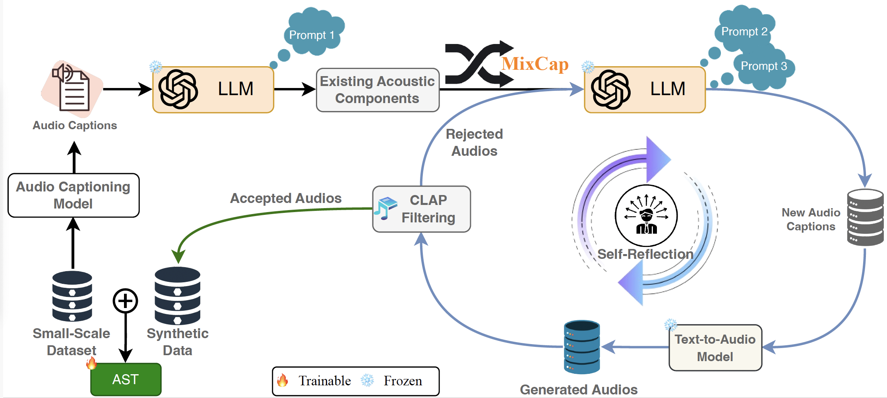

Results & Evaluation
Our experiments demonstrate that Synthio outperforms traditional augmentation techniques by up to 39%. Below is a comparison of our method with existing techniques:

A Novel Approach for Enhancing Audio Classification with Synthetic Data
Sreyan Ghosh♦♠* Sonal Kumar♠* Zhifeng Kong♦ Rafael Valle♦ Bryan Catanzaro♦ Dinesh Manocha♠
♦ NVIDIA, CA, USA ♠ University of Maryland, College Park, USA * Equal Technical Contribution
We present Synthio, a novel approach for augmenting small-scale audio[1] classification datasets with synthetic data. Our goal is to improve audio classification accuracy with limited labeled data. Traditional data augmentation techniques, which apply artificial transformations (e.g., adding random noise or masking segments), struggle to create data that captures the true diversity present in real-world audios.
To address this shortcoming, we propose to augment the dataset with synthetic audio generated from text-to-audio (T2A) diffusion models. However, synthesizing effective augmentations is challenging because not only should the generated data be acoustically consistent with the underlying small-scale dataset, but they should also have sufficient compositional diversity.
To overcome the first challenge, we align the generations of the T2A model with the small-scale dataset using preference optimization. This ensures that the acoustic characteristics of the generated data remain consistent with the small-scale dataset.
To address the second challenge, we propose a novel caption generation technique that leverages the reasoning capabilities of Large Language Models to:
The generated captions are then used to prompt the aligned T2A model. We extensively evaluate Synthio on ten datasets and four simulated limited-data settings. Results indicate our method consistently outperforms all baselines by 0.1%–39% using a T2A model trained only on weakly-captioned AudioSet.
[1] We use “audio” to refer to acoustic events comprising non-verbal speech, non-speech sounds, and music.
Synthio leverages Text-to-Audio (T2A) models to generate synthetic data. We apply preference optimization to align generated audio with small-scale datasets...
Our experiments demonstrate that Synthio outperforms traditional augmentation techniques by up to 39%. Below is a comparison of our method with existing techniques: